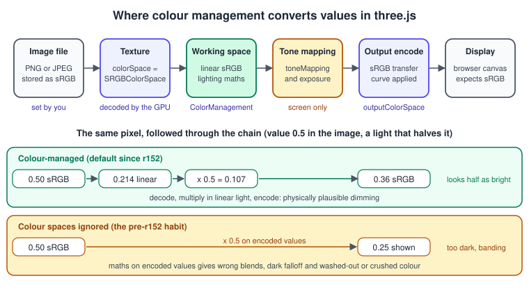
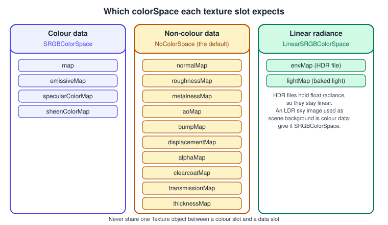
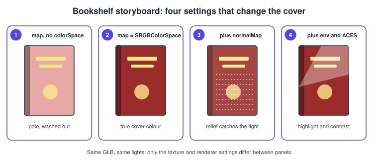
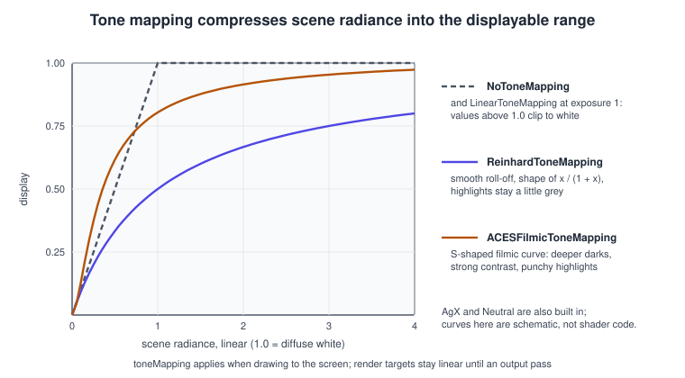
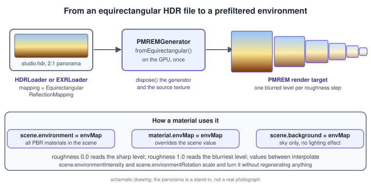
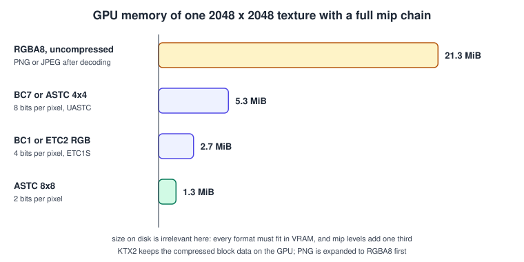

three.js Textures and Colour Management
|
This content was generated with the assistance of AI and should be verified against the official documentation before being relied on in production. |
Textures give a surface its detail, and colour management decides whether the numbers in those textures end up as the colours the artist meant. In three.js the two are inseparable: since r152 the library follows a linear workflow by default, which means every texture must say what kind of data it holds, and the renderer converts at the edges. Most "my model looks washed out" and "my metal is black" questions are answered on this page. The material side, the maps a texture can be assigned to, is in three.js Materials and PBR; the general theory of textures, filtering and colour is in Textures, Sampling and Mipmaps and Color Spaces, HDR and Tone Mapping. The raw WebGL view of the same objects (texImage2D, samplers) is in WebGL Textures and Samplers.
The facts were checked in November 2026 against three.js r187 (three@0.187.0) and its API documentation. The examples are ES
modules built with Vite (see three.js: Getting Started) and run on
WebGLRenderer, which uses WebGL 2 in all current browsers. TextureLoader fetches images through an image element, so a page
served from a different origin needs CORS headers on the image server (see
WebGL: Security, CORS and Privacy); a Vite dev server serving files
from public/ has no such problem.
In the Bookshelf three.js track this page is the textures-and-lighting step that follows the PBR page: the four PNG textures
(bookshelf-wood.png, bookshelf-cover.png, bookshelf-spine.png, bookshelf-pages.png, available beside
bookshelf.glb) are loaded by hand, given the right colour space, and the shelf is lit by an
HDR environment. The PNG files are what ships with the site; compressed KTX2 versions are produced by the reader with the
KTX tools, as shown in the KTX2 section below.
The Texture object and its loaders
A Texture wraps an image source plus the sampler state that WebGL needs: filters, wrapping, anisotropy, colour space, UV
transform. The image source can be an HTMLImageElement, ImageBitmap, HTMLCanvasElement, HTMLVideoElement, a typed array
(DataTexture) or compressed block data (CompressedTexture). three.js uploads it to the GPU the first time a material that
uses it renders, which is why creating a texture is cheap and the first frame can hitch.
| Class | Source | Notes |
|---|---|---|
|
PNG, JPEG, WebP, AVIF, SVG through an |
Returns the |
|
The same formats, decoded off the main thread with |
Returns an |
|
Six images (px, nx, py, ny, pz, nz). |
Returns a |
|
Radiance |
Float or half-float data, linear. Set |
|
OpenEXR and Ultra HDR JPEG. |
Other HDR sources; both come from the addons. |
|
KTX2 containers with Basis Universal or already compressed data. |
Transcodes to what the GPU supports; see below. Needs a transcoder path and |
|
A canvas, a video element or a typed array. |
Live and procedural sources. Set |
Loading with progress
Every loader accepts a LoadingManager, which counts started and finished loads and reports progress. The Bookshelf loading
overlay is a plain HTML element updated from the manager, so it also works while the canvas is still empty:
<!doctype html>
<html lang="en">
<head>
<meta charset="utf-8" />
<meta name="viewport" content="width=device-width, initial-scale=1" />
<title>Bookshelf: textures</title>
<style>
html, body { margin: 0; height: 100%; overflow: hidden; background: #111; font: 14px sans-serif; }
#loading { position: fixed; inset: 0; display: grid; place-items: center; color: #e5e7eb; background: #111; }
#bar { width: 240px; height: 6px; background: #374151; border-radius: 3px; overflow: hidden; }
#fill { width: 0; height: 100%; background: #818cf8; }
</style>
</head>
<body>
<div id="loading"><div><p id="label">Loading textures...</p><div id="bar"><div id="fill"></div></div></div></div>
<script type="module" src="/main.js"></script>
</body>
</html>// main.js
import * as THREE from 'three';
const manager = new THREE.LoadingManager();
manager.onProgress = (url, loaded, total) => {
document.getElementById('fill').style.width = `${(loaded / total) * 100}%`;
document.getElementById('label').textContent = `Loading ${loaded} of ${total}`;
};
manager.onError = (url) => console.error('Failed to load', url);
const loader = new THREE.TextureLoader(manager);
const names = ['wood', 'cover', 'spine', 'pages'];
const textures = {};
await Promise.all(
names.map(async (name) => {
const texture = await loader.loadAsync(`/textures/bookshelf-${name}.png`);
texture.colorSpace = THREE.SRGBColorSpace; // these four are colour images
textures[name] = texture;
})
);
document.getElementById('loading').remove();
console.log('Loaded', Object.keys(textures));
// textures.wood, textures.cover, ... go into MeshStandardMaterial.mapSource: three.js docs: LoadingManager
loadAsync returns a promise, which makes top-level await possible in a module script. Copy the four PNGs from the site into
public/textures/ before running.
When the decode of large images competes with the render loop, ImageBitmapLoader moves it to the browser’s image decoder
thread:
import * as THREE from 'three';
const bitmapLoader = new THREE.ImageBitmapLoader();
bitmapLoader.setOptions({ imageOrientation: 'flipY' }); // flipY on the texture itself is ignored for bitmaps
const bitmap = await bitmapLoader.loadAsync('/textures/bookshelf-cover.png');
const cover = new THREE.CanvasTexture(bitmap);
cover.colorSpace = THREE.SRGBColorSpace;Source: three.js docs: ImageBitmapLoader
Sampler state: wrap, filter, mipmaps, anisotropy
The Texture properties map one-to-one onto WebGL sampler parameters, described in
WebGL Textures and Samplers.
| Property | Values | Notes |
|---|---|---|
|
|
Horizontal and vertical behaviour outside 0..1. |
|
|
A 3x3 UV transform applied in the shader (the |
|
|
|
|
|
The default is trilinear filtering; use a non-mipmap filter only when mipmaps are off. |
|
|
three.js builds the chain with the GPU. Set to |
|
1 up to |
Sharper textures on floors and on shelf boards seen at a low angle. Cost is more texture fetches; 4 to 8 is a typical choice. |
|
|
Flips the image vertically at upload so the first row is at the top of the V axis. glTF textures set it to |
|
|
Premultiplies colour by alpha at upload; useful for correct blending of cut-out images. |
|
0, 1, 2, 3 |
Which UV set of the geometry ( |
|
|
How the lookup coordinate is derived; HDR panoramas use the equirectangular types. |
import * as THREE from 'three';
function prepareWood(texture, renderer) {
texture.colorSpace = THREE.SRGBColorSpace;
texture.wrapS = texture.wrapT = THREE.RepeatWrapping;
texture.repeat.set(2, 1); // two tiles along the board
texture.anisotropy = Math.min(8, renderer.capabilities.getMaxAnisotropy());
return texture; // minFilter is already trilinear
}Source: three.js docs: Texture
Notes that save time:
-
Non-power-of-two sizes are fine in WebGL 2: mipmaps and
RepeatWrappingwork for any size, which was not true in WebGL 1 and is why older books insist on 256, 512 and 1024. Powers of two still help GPU memory alignment and compressed formats. -
Texture size limits:
renderer.capabilities.maxTextureSizeis commonly 4096 to 16384. The shared Bookshelf textures are small (256 by 256 and 64 by 256) so they work everywhere. -
Changing properties after the first render: wrap, filter and
anisotropychanges are picked up on the next frame because they are sampler state; changingformat,type,colorSpaceor the image itself needstexture.needsUpdate = true.
Colour management
A colour value is only a number until you know how it is encoded. Images saved from cameras, paint programs and web browsers are sRGB encoded: the stored values follow a curve that gives more precision to dark tones, and 0.5 means roughly 21 percent of the light of 1.0, not 50 percent. Lighting is physics: it adds and multiplies amounts of light, and that only gives correct results on linear values. The two have to be converted at the right places, and three.js does it for you if you tell it what each texture and colour is.

The conversion from an sRGB-encoded component \( c \) to a linear one \( c_{ lin } \) is \( c_{ lin } = c / 12.92 \) for \( c \le 0.04045 \), and otherwise
\[ c_{ lin } = \left( \frac{ c + 0.055 }{ 1.055 } \right)^{ 2.4 } \]
and the encoder uses the inverse. For \( c = 0.5 \) the result is about 0.214, which is the number in the figure. You never write this yourself; the GPU does the decode when it samples a texture flagged as sRGB, and three.js adds the encode at the end of the fragment shader.
The four settings that matter
| Setting | Default (r187) | What it controls |
|---|---|---|
|
|
Whether |
|
|
The space in which lighting is computed. Changing it is rarely needed. |
|
|
What the image values mean. Set |
|
|
The encoding written to the canvas. |
Things that follow from the defaults:
-
A
new THREE.Color(0x9b2c2c)ormaterial.color.set('#9b2c2c')is interpreted as sRGB and converted to linear internally, so the colour you type is the colour you see.color.r,color.gandcolor.bhold the linear components, which is why reading them back gives numbers that look "wrong" next to the hex.color.getHex()returns the sRGB hex again, andcolor.getHexString(THREE.SRGBColorSpace)is the explicit form. -
Colour textures need
SRGBColorSpace. Without it three.js treats the file’s values as linear, never decodes them, and the encoded values go through lighting and then through the output encode a second time: the image looks washed out. This is the most frequent colour mistake, and panel 1 of the storyboard below shows it. -
Data textures must stay
NoColorSpace: normal, roughness, metalness, occlusion, height and alpha maps are numbers. Flagging a normal map as sRGB bends every normal toward the surface and makes lighting look wrong. The slot figure below lists them. -
Render targets and float data stay in the linear working space.
WebGLRenderTargettextures hold linear values; data you generate yourself in float formats is normally linear too. -
glTF and KTX2 are handled for you.
GLTFLoadersets the colour space per slot, andKTX2Loaderreads the transfer function stored in the file. Textures you create by hand are your responsibility.

The Bookshelf cover, built by hand, goes through four stages in the next storyboard. Panel 1 is the washed-out result of the
missing colorSpace; panel 2 fixes it; panel 3 adds a normal map; panel 4 adds the environment and tone mapping, which are
covered in the following sections.

The same sequence as code, with the colour-space checks that catch the common mistakes at development time:
import * as THREE from 'three';
THREE.ColorManagement.enabled = true; // the default; shown for clarity
const renderer = new THREE.WebGLRenderer({ antialias: true });
renderer.outputColorSpace = THREE.SRGBColorSpace; // the default; DisplayP3ColorSpace is the alternative
const loader = new THREE.TextureLoader();
// Colour data: tell three.js the file is sRGB
const coverMap = await loader.loadAsync('/textures/bookshelf-cover.png');
coverMap.colorSpace = THREE.SRGBColorSpace;
// Non-colour data: leave NoColorSpace
const normalMap = await loader.loadAsync('/textures/bookshelf-cover-normal.png');
const cover = new THREE.MeshStandardMaterial({
map: coverMap,
normalMap,
roughness: 0.5,
});
// A development-time guard: list the maps that look mis-flagged
function auditTextures(material) {
const colourSlots = ['map', 'emissiveMap', 'specularColorMap', 'sheenColorMap'];
const dataSlots = ['normalMap', 'roughnessMap', 'metalnessMap', 'aoMap', 'bumpMap', 'alphaMap'];
for (const slot of colourSlots) {
const t = material[slot];
if (t && t.colorSpace !== THREE.SRGBColorSpace) console.warn(`${slot} is not flagged sRGB`);
}
for (const slot of dataSlots) {
const t = material[slot];
if (t && t.colorSpace !== THREE.NoColorSpace) console.warn(`${slot} should be NoColorSpace`);
}
}
auditTextures(cover);
// Color literals are sRGB, components are linear
const red = new THREE.Color(0x9b2c2c);
console.log(red.getHexString()); // 9b2c2c
console.log(red.r.toFixed(3), red.g.toFixed(3), red.b.toFixed(3)); // linear values, not 0.608 0.172 0.172The normal map file name is only an example; the shared textures contain no normal map, so a reader following along would export one (for instance baked from a height map in Blender) or skip that line.
Wide gamut
Displays that support Display P3 can show saturated colours outside sRGB. Setting
renderer.outputColorSpace = THREE.DisplayP3ColorSpace makes the final encode target P3 instead of sRGB; the working space stays
linear sRGB with its Rec. 709 primaries, so nothing about lighting changes. Textures in P3 need colorSpace set to
DisplayP3ColorSpace too. The renderer also sets the WebGL context’s drawingBufferColorSpace so the browser interprets the canvas as P3. On
displays and browsers without wide-gamut support the output is converted back, and the difference only matters for content that
deliberately uses saturated colours.
Tone mapping
Lighting in linear space can produce values far above 1.0: a lamp, a specular highlight or an HDR environment easily reaches 10 or 100. A display can only show 0 to 1. Clipping everything above 1 produces flat white patches, so renderers apply a tone mapping curve that compresses the range smoothly.

renderer.toneMapping |
Character |
|---|---|
|
Values above 1 clip. Correct for sRGB-faithful colour work, harsh for bright scenes. |
|
Scales by |
|
Smooth roll-off, desaturates highlights slightly. |
|
Filmic curve with a strong toe. |
|
Popular filmic curve: strong contrast, saturated mid-tones. The look many demos use. |
|
Newer curve that keeps hue stable in very bright areas. |
|
The Khronos PBR Neutral curve, designed to keep base colours close to the original (product visualisation). |
|
Your own GLSL, supplied through the shader chunks. |
renderer.toneMappingExposure multiplies the radiance before the curve and is the quickest way to brighten or darken a lit
scene without touching lights. Details that matter:
-
Tone mapping happens only when drawing to the screen (or to an XR framebuffer). A
WebGLRenderTargetreceives untone-mapped linear values; when you post-process, an output pass applies tone mapping and the sRGB encode at the end (see three.js Post-processing). -
Individual materials opt out with
material.toneMapped = false, which UI panels and exact-colour swatches need. -
Basic materials are tone mapped too unless opted out; a pure white
MeshBasicMaterialshows as light grey under ACES. -
Exposure is a cheap animation target: tweening
toneMappingExposureis how many demos do "eye adaptation".
A small example with a switcher built on lil-gui (shipped with the addons) to compare curves on the red cover colour:
import * as THREE from 'three';
import GUI from 'three/addons/libs/lil-gui.module.min.js';
import { RoomEnvironment } from 'three/addons/environments/RoomEnvironment.js';
const renderer = new THREE.WebGLRenderer({ antialias: true });
renderer.setSize(innerWidth, innerHeight);
renderer.setPixelRatio(Math.min(devicePixelRatio, 2));
document.body.appendChild(renderer.domElement);
const scene = new THREE.Scene();
scene.environment = new THREE.PMREMGenerator(renderer).fromScene(new RoomEnvironment(), 0.04).texture;
const camera = new THREE.PerspectiveCamera(35, innerWidth / innerHeight, 0.1, 50);
camera.position.set(0, 0.3, 3.2);
const light = new THREE.DirectionalLight(0xffffff, 5); // bright on purpose
light.position.set(2, 3, 2);
scene.add(light);
const book = new THREE.Mesh(
new THREE.BoxGeometry(0.8, 1.2, 0.25),
new THREE.MeshStandardMaterial({ color: 0x9b2c2c, roughness: 0.45 })
);
scene.add(book);
const modes = {
None: THREE.NoToneMapping,
Linear: THREE.LinearToneMapping,
Reinhard: THREE.ReinhardToneMapping,
Cineon: THREE.CineonToneMapping,
'ACES Filmic': THREE.ACESFilmicToneMapping,
AgX: THREE.AgXToneMapping,
Neutral: THREE.NeutralToneMapping,
};
const settings = { toneMapping: 'ACES Filmic', exposure: 1 };
renderer.toneMapping = modes[settings.toneMapping];
const gui = new GUI();
gui.add(settings, 'toneMapping', Object.keys(modes)).onChange((name) => {
renderer.toneMapping = modes[name];
});
gui.add(settings, 'exposure', 0.1, 4, 0.05).onChange((value) => { renderer.toneMappingExposure = value; });
renderer.setAnimationLoop((time) => {
book.rotation.y = time * 0.0005;
renderer.render(scene, camera);
});Environment maps and PMREM
A metal reflects its surroundings, and a glossy wood board reflects them faintly. A real-time renderer cannot trace those
reflections, so it samples a prefiltered environment map: a panorama of the surroundings blurred to different degrees, one
level for each roughness. three.js builds this with PMREMGenerator (prefiltered, mipmapped radiance environment map), and every
PBR material then reads it through scene.environment or its own envMap.

The rules of the environment slots:
-
scene.environmentlights and reflects on every PBR material that does not have its ownenvMap. -
material.envMapoverrides it for that material;material.envMapIntensityandenvMapRotationadjust it. -
scene.backgroundshows an image or colour behind the objects; it does not light anything unless it is also assigned toscene.environment. -
scene.environmentIntensityandscene.environmentRotationscale and rotate the scene environment;backgroundIntensity,backgroundRotationandbackgroundBlurrinessdo the same for the visible sky, so the lit environment and the visible sky can differ (a blurred, dim sky behind a bright reflection source is a common choice). -
The map must have
mappingset toEquirectangularReflectionMapping(or a cube mapping) and its pixel data must be linear.
You can pass an equirectangular texture to scene.environment directly and the renderer runs PMREM for you; calling
PMREMGenerator yourself gives control over the lifetime (the generator and the source can be disposed once the result is
made) and lets you use a procedural scene (fromScene) as the source. The Bookshelf scene uses an HDR studio panorama:
import * as THREE from 'three';
import { HDRLoader } from 'three/addons/loaders/HDRLoader.js';
const renderer = new THREE.WebGLRenderer({ antialias: true });
renderer.setSize(innerWidth, innerHeight);
renderer.setPixelRatio(Math.min(devicePixelRatio, 2));
renderer.toneMapping = THREE.ACESFilmicToneMapping;
document.body.appendChild(renderer.domElement);
const scene = new THREE.Scene();
// public/hdr/studio.hdr is any equirectangular Radiance file you have the right to use
const hdr = await new HDRLoader().loadAsync('/hdr/studio.hdr');
hdr.mapping = THREE.EquirectangularReflectionMapping;
const pmrem = new THREE.PMREMGenerator(renderer);
const envTarget = pmrem.fromEquirectangular(hdr); // returns a WebGLRenderTarget
scene.environment = envTarget.texture;
scene.environmentIntensity = 1.0;
// A softly blurred copy of the panorama as the visible backdrop
scene.background = hdr;
scene.backgroundBlurriness = 0.35; // 0 to 1
scene.backgroundIntensity = 0.6;
// The generator can go once the target exists; the source can go if the background does not use it
pmrem.dispose();
const camera = new THREE.PerspectiveCamera(40, innerWidth / innerHeight, 0.1, 100);
camera.position.set(0, 1.4, 6);
renderer.setAnimationLoop(() => renderer.render(scene, camera));Source: three.js docs: PMREMGenerator
Notes on HDR environments:
-
File size and format. A 2K
.hdrpanorama is several megabytes; 1K is enough for reflections and blurred backgrounds.EXRLoaderandUltraHDRLoaderread other formats; Ultra HDR JPEG is a compact option. -
Licensing. Take panoramas from sources that allow your use; the site does not bundle one, which is why the example reads a path you provide.
RoomEnvironmentneeds no file at all and is fine for tests and many products. -
Dynamic environments.
CubeCameraplusfromCubemapregenerates a PMREM from live content, at a real cost; do it only when the reflection must change. -
The old API. The environment used to be the
envMapof each material, loaded as a cube texture and used raw. Since the PMREM step was added,scene.environmentis the default way, and unfiltered cube maps look noticeably wrong on rough materials.
Compressed textures with KTX2
A PNG is small on disk because it is compressed for transport, but the GPU cannot read PNG: three.js decodes it to RGBA8, which takes four bytes per texel plus a third more for the mip chain. A 2048 by 2048 texture is about 21 MiB of video memory. Block compression formats (BC on desktop, ASTC and ETC on mobile) keep the data compressed in video memory, at one quarter to one sixteenth of that size.

The problem is that each GPU supports different formats. KTX2 with Basis Universal solves it: you ship one file with a
supercompressed intermediate format (ETC1S for the smallest size, UASTC for quality), and KTX2Loader transcodes it at load
time, in a worker, into the best format the device supports (ASTC, BC7, BC1, ETC2 and so on, or uncompressed RGBA8 as a last
resort). Mipmaps are stored in the file.
import * as THREE from 'three';
import { KTX2Loader } from 'three/addons/loaders/KTX2Loader.js';
const renderer = new THREE.WebGLRenderer({ antialias: true });
// Copy node_modules/three/examples/jsm/libs/basis/ into public/basis/ so the transcoder files are served
const ktx2 = new KTX2Loader()
.setTranscoderPath('/basis/')
.detectSupport(renderer); // asks the GPU which compressed formats it can use
const cover = await ktx2.loadAsync('/textures/bookshelf-cover.ktx2');
// KTX2Loader sets texture.colorSpace from the transfer function stored in the file,
// so an sRGB-encoded KTX2 comes back as SRGBColorSpace. Check it once:
console.log(cover.colorSpace, cover.isCompressedTexture, cover.mipmaps.length);
const material = new THREE.MeshStandardMaterial({ map: cover, roughness: 0.5 });
// Release the transcoder worker pool when no more KTX2 files will be loaded
// ktx2.dispose();Source: three.js docs: KTX2Loader
To make bookshelf-cover.ktx2 from the PNG shipped with the site, use the KTX tools from the Khronos KTX-Software package
(toktx in older releases, ktx create in the 4.4 and later command-line tool):
# KTX-Software 4.4 or later: sRGB colour texture, UASTC with Zstandard, generated mipmaps
ktx create --format R8G8B8A8_SRGB --encode uastc --zstd 18 --generate-mipmap bookshelf-cover.png bookshelf-cover.ktx2Source: KhronosGroup/KTX-Software
Pass --format R8G8B8A8_UNORM for data textures such as normal and ORM maps. For glTF files, the same conversion can be done
for every texture in a model with the glTF-Transform tool, and GLTFLoader is given a KTX2Loader with setKTX2Loader; that
route is in three.js: Loading Models (glTF). Practical notes:
-
flipYdoes not apply to compressed textures. The file orientation is fixed when it is written. -
Normal maps compress worse than colour. UASTC handles them acceptably; ETC1S can show blocky artefacts on normals, so keep those uncompressed or UASTC.
-
Transcoding takes time (milliseconds to tens of milliseconds per texture on a worker). Loading the whole shelf at start-up, behind the loading overlay above, hides it.
-
Everything above is optional. For the 64 to 256 pixel Bookshelf textures PNG is perfectly fine; compression pays off for 1024 and larger textures and for many materials.
Canvas, video and data textures
Textures do not have to come from files. They are how three.js shows 2D drawing, video and procedural data on 3D surfaces, and they cover the "2D overlay on a 3D object" topics of the books.
-
CanvasTexture(canvas)wraps a 2D canvas, so any 2D drawing code (text, charts, a minimap) can feed a material. After redrawing, settexture.needsUpdate = true. Text on the Bookshelf spines is a good example, drawn with the same font as the rest of the page. -
VideoTexture(video)uploads the current video frame each time one is ready (it usesrequestVideoFrameCallbackwhere the browser supports it). SetcolorSpacetoSRGBColorSpace, and start the video from a user gesture because browsers block unmuted autoplay. -
DataTexture(array, width, height, format, type)wraps a typed array: noise, lookup tables, baked data. SetneedsUpdateafter filling it. Float types need hardware support, which WebGL 2 guarantees for sampling but not always for linear filtering.
import * as THREE from 'three';
// A spine label drawn with the 2D canvas API
function makeSpineLabel(title) {
const canvas = document.createElement('canvas');
canvas.width = 64;
canvas.height = 256;
const ctx = canvas.getContext('2d');
ctx.fillStyle = '#9b2c2c';
ctx.fillRect(0, 0, canvas.width, canvas.height);
ctx.fillStyle = '#fde68a';
ctx.font = 'bold 28px sans-serif';
ctx.textAlign = 'center';
ctx.textBaseline = 'middle';
ctx.translate(canvas.width / 2, canvas.height / 2);
ctx.rotate(-Math.PI / 2); // text runs along the spine
ctx.fillText(title, 0, 0);
const texture = new THREE.CanvasTexture(canvas);
texture.colorSpace = THREE.SRGBColorSpace; // canvas pixels are sRGB
texture.anisotropy = 4;
return texture;
}
const spine = new THREE.MeshStandardMaterial({ map: makeSpineLabel('Moby Dick'), roughness: 0.6 });
// A video on a screen that stays in sync with playback
const video = document.createElement('video');
video.src = '/media/library-tour.mp4';
video.loop = true;
video.muted = true; // needed for autoplay without a click
video.playsInline = true;
video.crossOrigin = 'anonymous'; // required for a video from another origin
await video.play();
const videoTexture = new THREE.VideoTexture(video);
videoTexture.colorSpace = THREE.SRGBColorSpace;
const screen = new THREE.Mesh(new THREE.PlaneGeometry(1.6, 0.9), new THREE.MeshBasicMaterial({ map: videoTexture }));Source: three.js docs: CanvasTexture
For plain 2D overlays that need not be part of the scene (the score of the "catch the falling books" game, labels that follow
objects), HTML positioned over the canvas, or the CSS2DRenderer addon, is usually simpler and sharper than a canvas texture:
the browser lays out and rasterises text itself, and it stays crisp at any zoom.
Memory and disposal
Textures are the biggest users of video memory in most scenes. Rules of thumb:
-
The size in video memory is width times height times bytes per texel, times 4/3 with mipmaps: \( 2048 \times 2048 \times 4 \times 4/3 \approx 21.3 \) MiB for RGBA8, as in the chart above.
-
renderer.info.memory.texturescounts the live GPU textures; if it climbs while a scene runs, something is leaking. The lifecycle is covered in three.js Performance and Disposal. -
Removing a mesh from the scene does not free its textures. Call
texture.dispose()on textures nobody uses any more, and dispose materials, geometries and render targets with them. -
A texture shared by several materials is one GPU object; assign the same
Textureinstance and do not load the same file twice.texture.clone()shares the image source, which makes it a cheap way to give a second material its ownrepeatoroffset.
Common mistakes
| Symptom | Cause | Fix |
|---|---|---|
Textures look pale and low contrast |
Colour texture without |
Set |
Lighting looks wrong on a normal-mapped surface |
Normal map flagged as sRGB. |
Keep |
Colours differ from the design file |
Colour values given as linear numbers, or |
Give hex numbers and CSS strings (sRGB) and keep colour management enabled. |
Reflective surfaces look black or flat |
No |
Add |
Upside-down textures |
|
Use |
Blocky or smeared textures far away |
|
Keep the defaults; add |
Texture upload stutters |
Large images decoded and uploaded in one frame. |
Load behind a loading screen, use |
Out of memory on phones |
Large uncompressed textures and many render targets. |
KTX2 Basis textures, smaller sizes, dispose unused textures. |
What the books say, and what changed
PAR, LTJ and TCB cover textures, environment maps and bump or normal maps in the chapters shown in the table below. The concepts (UVs, filtering, reflection maps, canvas and video textures) are all still valid; the API and the colour handling are not.
| Book statement | Today |
|---|---|
PAR ch. 3 and 6, LTJ ch. 10 and TCB ch. 4 load images with |
|
All three books ignore colour spaces; LTJ and TCB enable |
Colour management is on by default since r152: set |
LTJ ch. 10 and TCB ch. 4 build reflections with |
Prefiltered environments with |
PAR ch. 6, LTJ ch. 10 and TCB ch. 3 and 4 show canvas and video textures and 2D or DOM overlays. |
The idea is unchanged: |
The books use power-of-two sizes because of WebGL 1 limits. |
WebGL 2 lifts them (mipmaps and repeat work for any size); powers of two still help compression. |
The books predate compressed-texture containers such as KTX2 and the prefiltered HDR environments used today. |
KTX2 with Basis Universal is the recommended compressed format; HDR environment maps are standard. |
The migration guide lists each change by version: three.js Migration Guide.
Recent changes
| Version | Change |
|---|---|
r89 |
|
r152 |
|
r163 |
|
r180 |
|
References
-
three.js documentation: https://threejs.org/docs/
-
TextureLoader: https://threejs.org/docs/pages/TextureLoader.html
-
LoadingManager: https://threejs.org/docs/pages/LoadingManager.html
-
ImageBitmapLoader: https://threejs.org/docs/pages/ImageBitmapLoader.html
-
CanvasTexture: https://threejs.org/docs/pages/CanvasTexture.html
-
VideoTexture: https://threejs.org/docs/pages/VideoTexture.html
-
PMREMGenerator: https://threejs.org/docs/pages/PMREMGenerator.html
-
KTX2Loader: https://threejs.org/docs/pages/KTX2Loader.html
-
WebGLRenderer: https://threejs.org/docs/pages/WebGLRenderer.html
-
three.js manual: https://threejs.org/manual/
-
three.js migration guide: https://github.com/mrdoob/three.js/wiki/Migration-Guide
-
three.js releases: https://github.com/mrdoob/three.js/releases
-
KTX-Software: https://github.com/KhronosGroup/KTX-Software
-
KTX 2.0 specification: https://registry.khronos.org/KTX/specs/2.0/ktxspec.v2.html
-
Basis Universal: https://github.com/BinomialLLC/basis_universal
-
MDN, WebGL best practices: https://developer.mozilla.org/en-US/docs/Web/API/WebGL_API/WebGL_best_practices
-
Learning Three.js, second edition (publisher page): https://www.packtpub.com/en-us/product/learning-threejs-the-javascript-3d-library-for-webgl-second-edition-9781784392215
-
Three.js Cookbook (publisher page): https://www.packtpub.com/product/threejs-cookbook/9781783981182
-
WebGL: Up and Running (publisher page): https://www.oreilly.com/library/view/webgl-up-and/9781449326487/